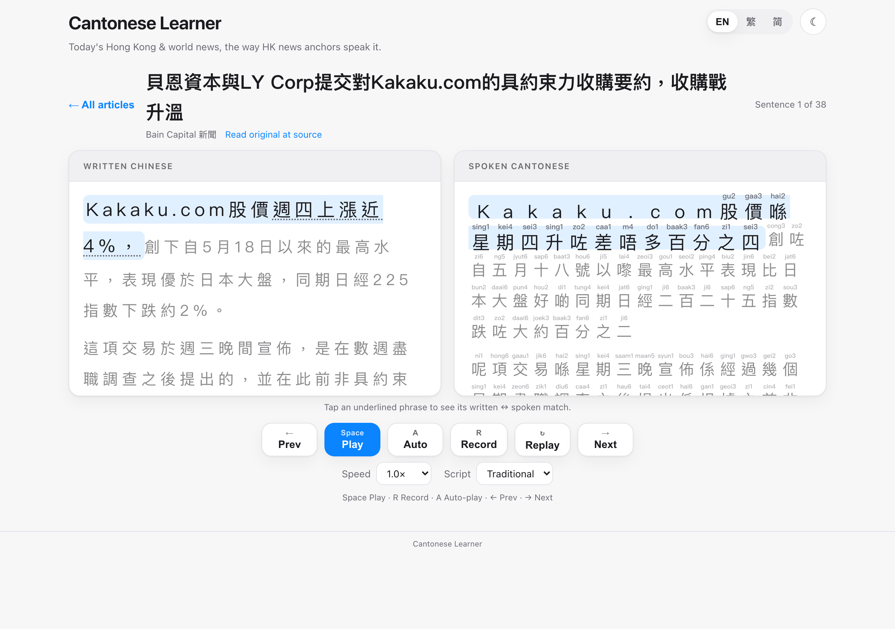
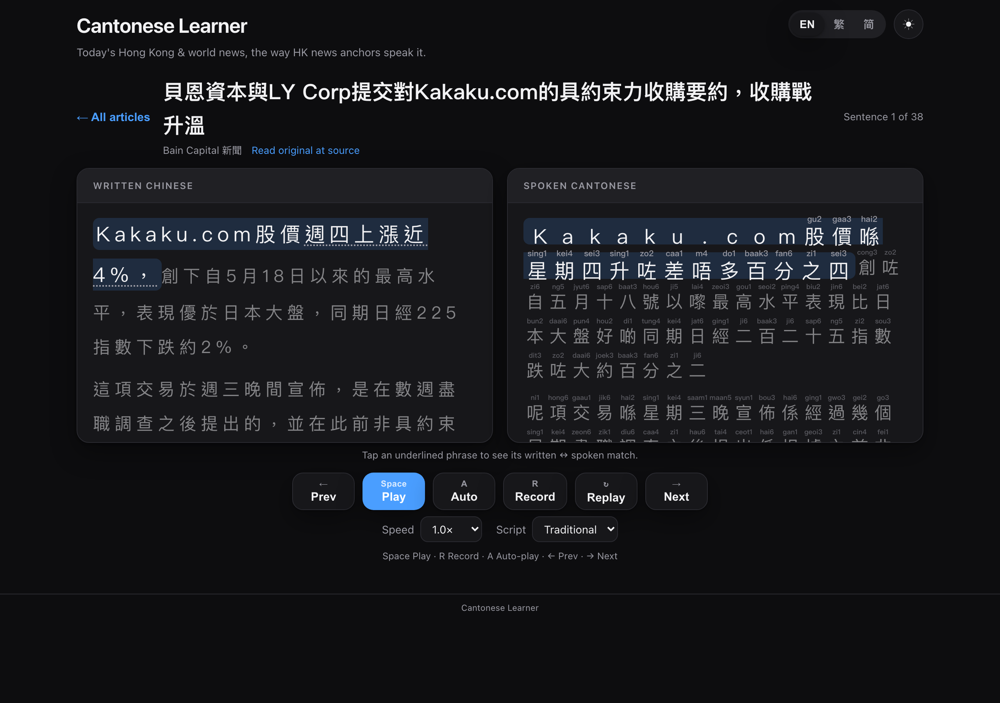
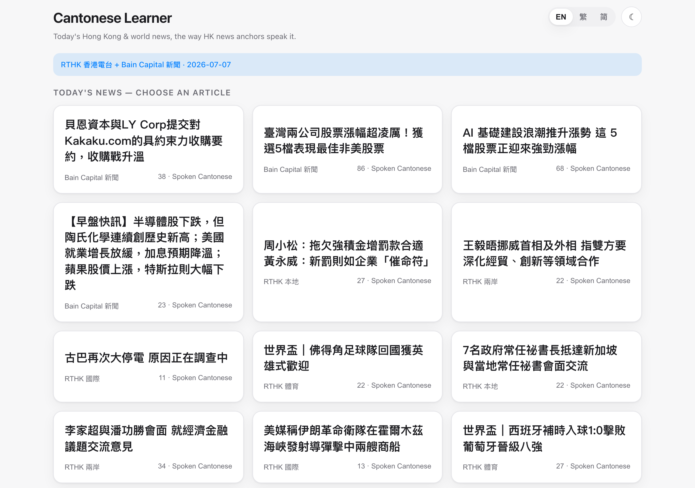
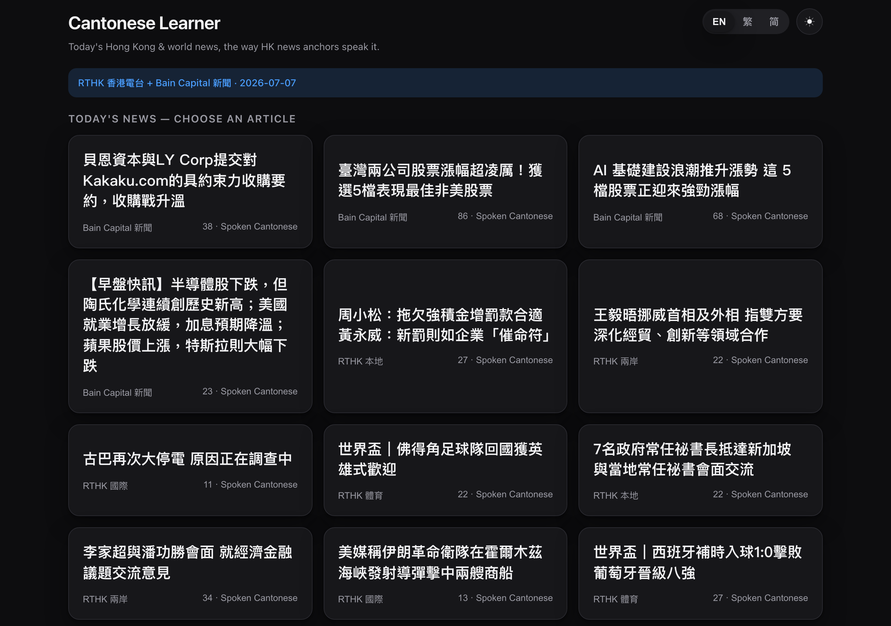

A free web app for learning spoken Cantonese
Written Chinese and spoken Cantonese differ in vocabulary and grammar: 認為 on the page is 覺得 out loud. Every morning a GitHub Actions job pulls RTHK stories, has an LLM rewrite each sentence into spoken Cantonese, runs a second review pass, adds jyutping over every character and records neural zh-HK audio. The app shows the written and spoken versions side by side and grades you character by character when you read aloud. It also has 96 scenario dialogues, from a cha chaan teng breakfast to an earnings call.
Lines 1, 3 and 8 of the 11-line "Breakfast at a cha chaan teng" scenario, copied from
frontend/data/conversations.json. 這邊 becomes 呢邊, 吃什麼 becomes 食咩, and
可以了 becomes 得喇.
scenario dialogues, 982 lines, in 8 categories of 12, each line with a speaker label, English gloss and its own neural audio.
per news sentence: a GPT-4.1 rewrite, then a GPT-4.1-mini review that repairs mangled compounds and meaning drift.
to run: GitHub Models with the workflow's own token, edge-tts for audio, GitHub Pages for hosting. A Claude key is optional.
Hong Kong time, when the daily build fetches, rewrites, voices and republishes the lessons.
The problem
In Hong Kong you read one register and hear another: newspapers are in written Chinese, while the evening news is spoken in Cantonese, with different words and different grammar. A learner can manage the first and still lose the thread of the second. The app puts both on screen and makes the mapping between them the thing you study.

Tap to compare
The rewrite produces aligned phrase pairs. Tap an underlined phrase in either pane and its counterpart highlights in the other, so you can see that 認為 became 覺得. With the free tier, the pairs come from a character-level longest-common-subsequence aligner; the Claude tier returns them directly in its structured output.
On a phone the two panes become an interleaved view, with each written line directly above its spoken version.

Quality
Mechanical written-to-spoken conversion makes errors a learner can't spot (single-character rules turn 不足 into 唔足 and 其他 into 其佢), so the build uses the best tier available:
ANTHROPIC_API_KEY secret: a rewrite that returns aligned phrase pairs, then an independent verifier call. The day is labeled llm+verifyNumbers
In V1, Arabic numerals had no jyutping and no reliable reading. V2's
numbers.js, shared by the build and the browser, reads each
number the way an anchor would. The grader runs the recognizer's output
through the same engine, so a correct reading scores green whether Chrome
hears 二零二零年 or 2020年.
2020年二零二零年a year, digit by digit2020個二千零二十個a quantity, as a cardinal15%百分之十五a percentage54.1五十四點一a decimal28463222二八四六三二二二a long digit run, like a phone numberOutput of spellOutNumbers() from frontend/numbers.js, run 2026-10-26.
The curriculum
Next to the news are 96 dialogues in 8 categories of 12: eating and drinking,
getting around, shopping, friends and small talk, office life, finance and
deals, home and services, and health and weather. Each line has written
Chinese, spoken Cantonese with jyutping, an English gloss, a speaker label,
and audio in a different voice per speaker. The source is hand-authored in
content/conversations-src.json and was checked by separate AI
review passes for natural Cantonese and for agreement between the three
layers. The build script enforces 12 scenarios per category, no digits, and
no Cantonese-only characters in the written layer.


Architecture
GitHub Actions is the cron job and the build server. At 06:00 Hong Kong time
it fetches RTHK RSS across five topics and the full article bodies, rewrites
and reviews them, spells out numbers, adds jyutping with the to-jyutping
library, synthesizes an MP3 per sentence with edge-tts zh-HK voices, and
publishes frontend/ to GitHub Pages. Every step fails soft: no
key means rules, a failed fetch means bundled sample lessons, a failed clip
means the browser voice for that sentence.
Up to four lesson slots go to a second source: a WeChat RSS bridge if one is
configured, otherwise a scrape of Google News for Chinese-language Bain
Capital coverage. backend/junk.js filters reload banners,
disclaimers and paywall prompts, and an article left with nothing but boilerplate is dropped. The repo has unit tests with node:test and a Playwright
end-to-end test that renders the app headless.
Limitations
Grading uses the browser's Web Speech API with the yue-Hant-HK
locale, so it needs Chrome; other browsers can listen and read. In Chrome
that API sends the recording to Google's speech service for recognition.
The spoken Cantonese in news lessons is machine-written and machine-reviewed. The review pass and the rebuilt rule converter cut errors without removing them all. Treat it as practice material, and trust your ear when a line sounds wrong.
News lessons are rebuilt every day and not archived. Space-separated digit groups such as a phone number written "2846 3222" are currently read as two cardinals; only unbroken runs are read digit by digit.
Built with
node:test unit tests and Playwright end-to-end